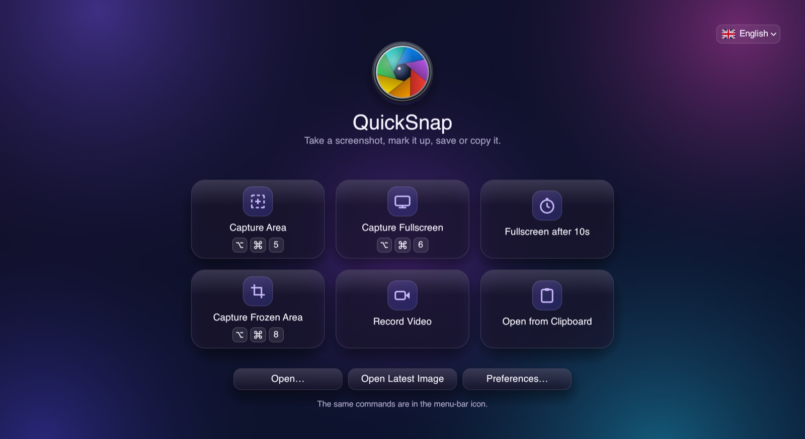
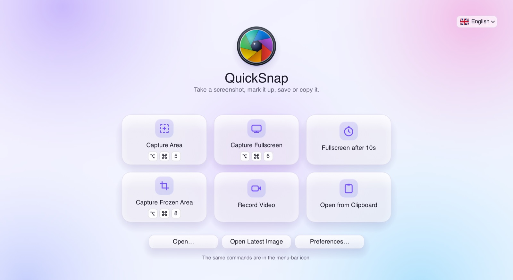
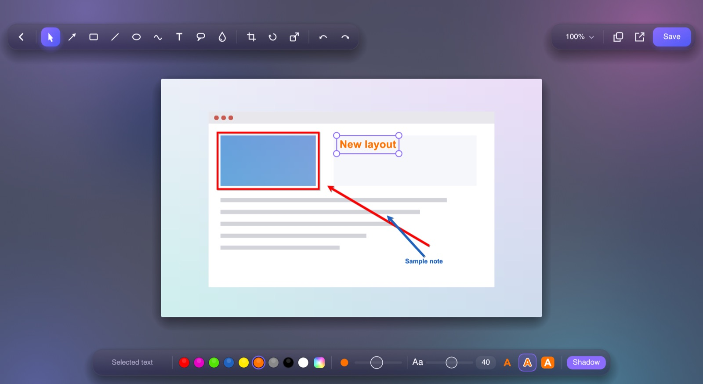
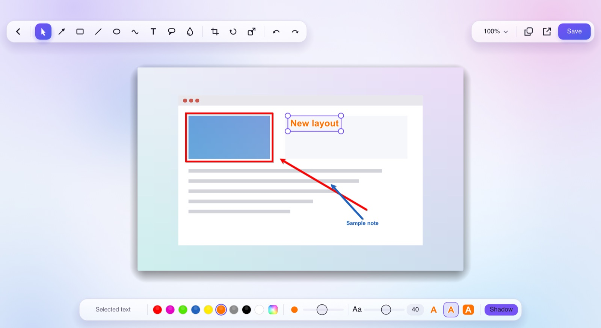
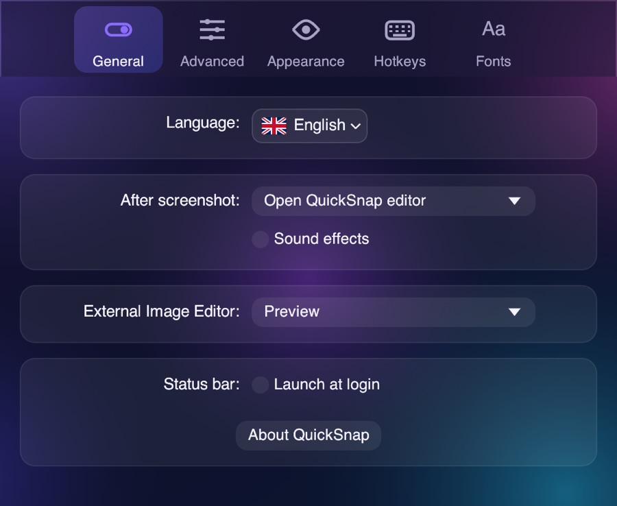
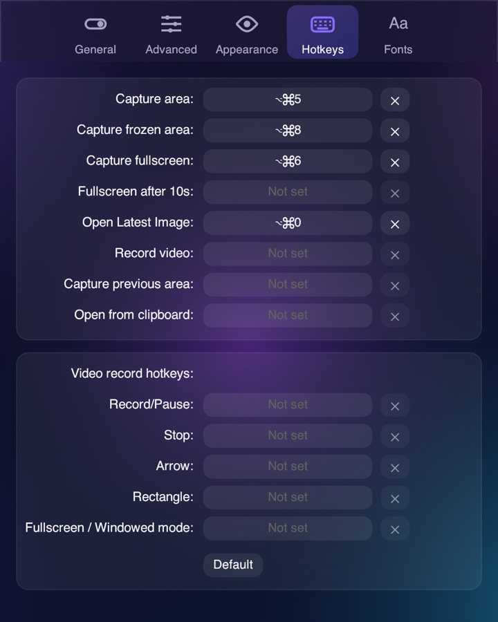
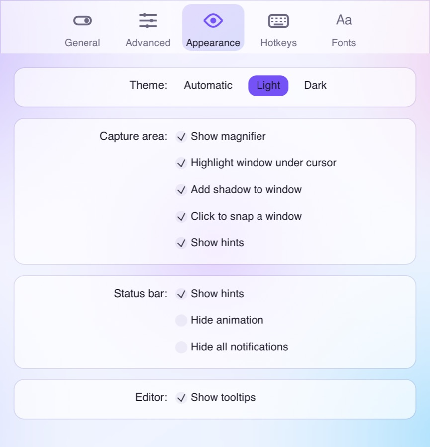

Capture any way you like
Selected area, frozen area (the screen freezes while you choose), full screen, or full screen after a 10-second delay.
Take a screenshot, mark it up, save or copy it.
A tiny, native menu-bar app for macOS, written in Rust.


Press a shortcut, drag over what matters, add an arrow, and it's ready to paste into a chat, a ticket or a doc.
Selected area, frozen area (the screen freezes while you choose), full screen, or full screen after a 10-second delay.
Full-screen recording to .mov, with the cursor and your clicks shown.
Arrows, rectangles, ellipses, lines, freehand pen, text and callouts. Move and resize every item afterwards.
Blur passwords, emails and faces. Crop, rotate and resize without leaving the editor.
A soft shadow on a transparent PNG, just like macOS window screenshots.
No Dock icon. Close the window and it keeps running, with every command in the menu-bar icon too.
Global shortcuts for every action, plus save folder, PNG or JPEG and file-name templates.
Up to 40 steps of undo and redo. Pinch or ⌘ + scroll to zoom around the pointer.
After each capture: open the editor, save to a folder, copy to the clipboard, or send it to Preview.
A clean canvas with floating glass toolbars. Pick a tool, pick a colour, click and drag.


A see-through window with your desktop blurred behind it, a colour-gradient backdrop and no title bar. Tune it all in Preferences.



Pick it from the home screen or Preferences. Chinese, Japanese and Korean use macOS's own fonts.
Get QuickSnap-<version>.dmg from the latest release.
Open the DMG and drag QuickSnap into your Applications folder.
The first time, go to System Settings → Privacy & Security and click Open Anyway.
Turn QuickSnap on under Privacy & Security → Screen Recording, then reopen the app.
# build from source (Rust + Xcode CLT) $ git clone https://github.com/donbuche/quicksnap $ cd quicksnap $ ./scripts/package-macos.sh # → dist/QuickSnap.app and the .dmg
Free, small and private. Give it a try, and star the repo if it saves you some clicks.